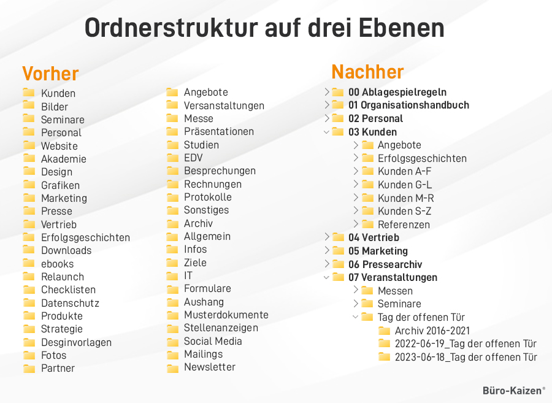
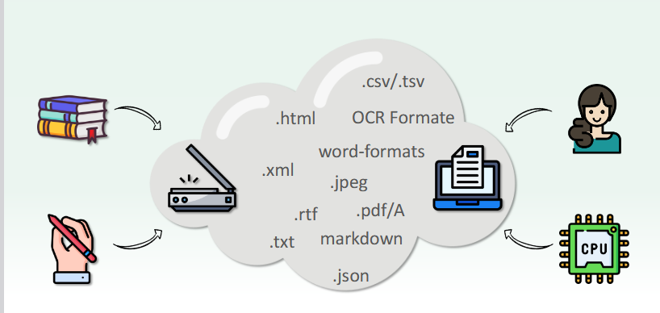
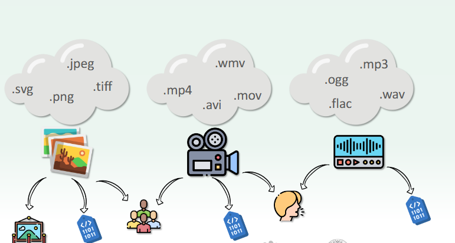

Sitzung 4: Forschungsdatenmanagement
Einleitung: Die Digitalisierung von Daten allein reicht nicht aus. Sie müssen von Anfang an so organisiert und verwaltet werden, dass sie auch Jahre später noch verständlich, auffindbar, nutzbar und teilbar sind. Deshalb spielt das Forschungsdatenmanagement eine zentrale Rolle.
Forschungsdatenmanagement
Forschungsdatenmanagement umfasst den gesamten Lebenszyklus von Forschungsdaten. Dazu gehören die Planung, Organisation, Speicherung, Archivierung und Bereitstellung der Daten. Außerdem sollten Forschungsdaten in geeigneten Dateiformaten gespeichert und gut dokumentiert werden, damit sie langfristig erhalten bleiben, leicht gefunden und auch von anderen verstanden und nachgenutzt werden können.
FAIR-Prinzipien
Die FAIR-Prinzipien beschreiben, wie Forschungsdaten verwaltet werden sollten. FAIR steht für Findability, Accessibility, Interoperability und Reusability. Diese vier Prinzipien helfen dabei, Forschungsdaten langfristig auffindbar, zugänglich und wiederverwendbar zu machen.
Weiterführender Link: GO FAIR – FAIR Principles
Findability
• Forschungsdaten müssen leicht gefunden werden können. Dafür werden Repositorien, Metadaten und
eindeutige Identifier (z. B. DOI) verwendet.
Accessibility
• Forschungsdaten sollen möglichst zugänglich sein. Wenn die Daten nicht frei verfügbar sind,
sollten
wenigstens die Metadaten zugänglich sein.
Interoperability
• Forschungsdaten sollten in offenen und standardisierten Formaten gespeichert werden, damit sie mit
verschiedenen Programmen genutzt werden können.
Reusability
• Forschungsdaten sollten gut dokumentiert sein und eine klare Lizenz haben, damit andere sie später
wiederverwenden können.
Datenspezifika in den Geisteswissenschaften
Forschungsdaten in den Geisteswissenschaften bestehen nicht nur aus Texten. Sie können zum Beispiel
Bilder, Audio, Videos, 3D-Modelle, Umfragen oder digitale Sammlungen sein. Deshalb müssen
unterschiedliche Datentypen unterschiedlich verwaltet werden.
Jeder Datentyp hat geeignete Dateiformate und besondere Anforderungen:
- Text → PDF, TXT, XML, CSV
- Bild → PNG, JPEG, TIFF, SVG (Urheberrecht, Datenschutz und Metadaten beachten)
- Video → MP4, AVI, MOV, WMV
- Audio → MP3, WAV, FLAC, OGG
- 3D-Modell → STL, OBJ, 3DS (braucht viel Speicherplatz)
Projektorganisation
Eine gute Projektorganisation hilft dabei, Dateien übersichtlich zu speichern und später schneller wiederzufinden. Dabei sind drei Punkte besonders wichtig:
- Klare und logische Ordnerstruktur
- Verwendung von Projekt-Templates
- Erstellung einer README-Datei (Dokumentation und Orientierung)
Dateibenennung
Dateinamen sollten klar, einheitlich sowie menschen- und maschinenlesbar sein. Dafür sollten keine Leerzeichen oder Sonderzeichen verwendet, eine einheitliche Groß- und Kleinschreibung genutzt sowie Datum und Version immer im gleichen Format geschrieben werden.
Fazit
In dieser Sitzung habe ich gelernt, dass Forschungsdaten von Anfang an gut organisiert werden müssen. Dazu gehören geeignete Dateiformate, eine klare Projektstruktur und einheitliche Dateinamen. So bleiben die Daten langfristig auffindbar, verständlich und wiederverwendbar.
Material aus der Sitzung


